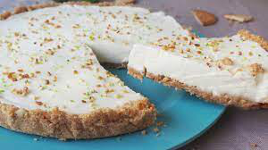

Trufas de cava y frambuesas
Ingredientes
- 100gr de chocolate negro 70% de cacao
- 80 ml nata liquida
- 30 ml cava
- 25 gr de azucar glase
- 5gr de matequilla
- 25gr de frambuesa deshidratada/li>
- Cacao puro en polvo
Elaboración paso a paso
- Calentamos la nata junto al azúcar hasta que hierva. En un cuenco troceamos el chocolate y
vertemos la nata caliente por encima mientras removemos con unas varillas para que el
chocolate se deshaga completamente.
- Agregamos la mantequilla y el cava mezclamos totalmente. Vertemos la mezcla en una bandeja,
echamos la frambuesa, removemos y refrigeramos hasta que la masa se haya endurecido (cuanta
más delgada sea la superficie antes se enfría).
- Una vez tengamos la masa cuajada, hacemos bolitas de igual tamaño con una cuchara y damos
forma de bolita perfecta con las manos, teniendo cuidado de no dar mucho calor a la masa.
- Por último rebozamos cada trufa en lo que prefiramos: cacao en polvo, virutas, bolitas de
anís, etc. Refrigeramos hasta el momento de tomar en un recipiente hermético o túper para
que el chocolate no se humedezca.
Tartaletas de lima y queso crema

Ingredientes
- 100gr de galletas maria o siilares
- 30gr de almendra laminada
- 60gr de mantequilla
- 4 limas
- 100gr de queso crema
- 180gr de leche condensada
Elaboración paso a paso
- Fundimos la mantequilla en el microondas, a baja potencia y golpes cortos de calor, o en un
cacito al fuego. Trituramos las galletas en un robot de cocina junto con las almendras,
agregamos la mantequilla fundida y trituramos de nuevo hasta conseguir una masa homogénea.
Podemos especiar la mezcla con un poco de canela, jengibre, nuez moscada, cardamomo, etc. El
resultado es increíble.
- Extendemos la masa sobre la base y laterales de cuatro moldes para tartaleta, con ayuda de
los dedos y procurando que quede de igual grosor por toda la superficie. Si lo preferimos
podemos cubrir un sólo molde y hacer una tarta grande que porcionar en el momento de servir.
Esto es totalmente opcional. A vuestro gusto y según lo que tengáis a mano.
- En este momento, la mezcla comenzará a espesar por efecto del zumo de lima así que, sin
perder tiempo, sacamos los moldes de tartaleta de la nevera y los rellenamos con la mezcla.
Alisamos la superficie para que quede bien bonita e introducimos las tartaletas de nuevo en
la nevera. Dejamos que cuajen durante, al menos, seis horas o, mejor aún, toda la noche.
Paletas de yogurt griego y frambuesas
Ingredientes
- 350gr de yogurt natural cremoso
- 200gr de frambuesa fresca o congelada
- 2ml de zumo de limon o lima
- Una pizca de sal
- Una cucharada de azucar
- 30 ml de miel o azucar invertida
Elaboración paso a paso
- Escurrir el líquido del yogur, mejor si lo podemos dejar sobre un paño encima de un colador
durante unas horas. Lavar las frambuesas y mezclar con el azúcar, removiendo con suavidad
pero dejando que se rompan un poco.
- Batir con unas varillas el yogur y añadir el zumo de lima o limón, la sal y la miel.
Comprobar el punto de dulzor y añadir más miel si lo preferimos más dulce. Agregar las
frambuesas y remover para distribuirlas de forma homogénea.
- Llenar con cuidado los moldes para polos y cerrarlos con el palito o la base que tengan.
Llevar al congelador y dejar por lo menos tres o cuatro horas antes de servir.
Mousse de melocoton
Ingredientes
- 3 melocotones maduros
- 200 ml de nata liquida para montar
- Azucar al gusto
- Pistachos al gusto
- Chocolate negro picado al gusto
Elaboración paso a paso
- Pelar los melocotones y trocear desechando los huesos. Colocarlos en una trituradora o
picadora y triturar bien hasta que quede una pasta fina. Enfriar en la nevera.
- Empezar a montar la nata, añadiendo un poco de azúcar al gusto a mitad del proceso, hasta
dejarla muy espesa. Separar 2-3 cucharadas de nata y reservarla en un cuenco en la nevera.
Agregar poco a poco la pasta de melocotón, mezclando con movimientos envolvente.
- Corregir el punto de dulzor y servir en copas anchas. Decorar con un poco de la nata montada
reservada, pistachos picados, chocolate en láminas, crocanti de almendras, etc., al gusto.
Servir muy frío.
Hojaldres rellenos de crema de cacao y nueces
Ingredientes
- 1 hoja de hojaldre rectangular
- 100 gr de crema de cacao y avellanas
- 30gr de nueces
- 1 huevo
- semilla de sesamo
- Harina de trigo
Elaboración paso a paso
- Espolvoreamos la superficie de trabajo con un poco de harina y extendemos la lámina de
hojaldre sobre ella. Espolvoreamos un poco más de harina sobre la lámina de hojaldre y la
extendemos con la mano, para que quede bien repartida. Así no se nos pegará el hojaldre y lo
podremos manipular sin problema.
- Con una regla y un corta pizzas (o un cuchillo afilado), recortamos los bordes para
igualarlos, medimos el largo y el ancho de la lámina de hojaldre y la cortamos en cuadrados.
A mi me salieron 30 cuadrados de 5x5 cm, porque quería que fueran de bocado, pero podéis
hacerlos del tamaño que más os guste.
- Humedecemos los bordes de los hojaldres con los dedos mojados en agua, tapamos cada uno con
los cuadrados de hojaldre restantes y presionamos los bordes para sellar, de manera que no
se salga el relleno al hornealos. Pincelamos con huevo batido, espolvoreamos con semillas de
sésamo y horneamos a 210ºC durante 10-12 minutos o hasta que el hojaldre comience a tomar
color.